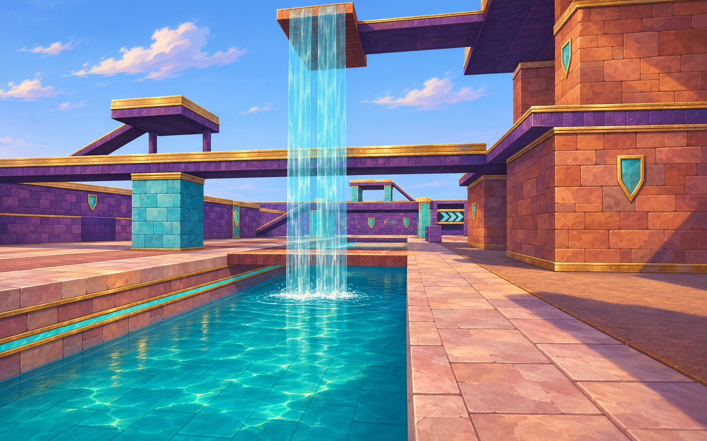
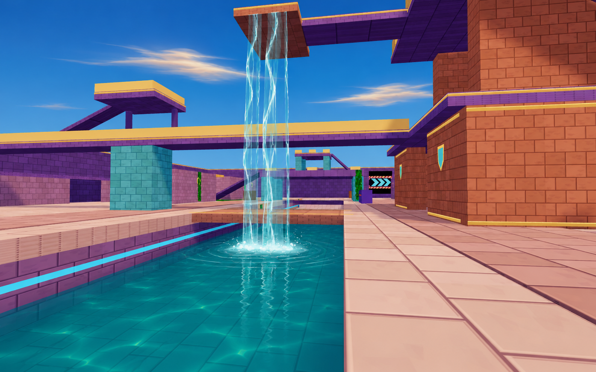
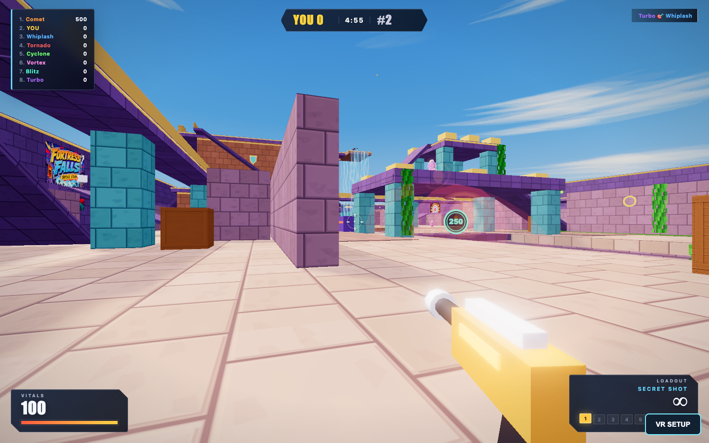

Fortress Falls, painted into play
Two screenshot → generated paintover → code passes. Compare the original arena with the final real-time render, then inspect the two concept targets below.
Final implementationOriginal game
Explore the 3D map · Play locally · Changes and verification · Exact prompts
Next study: Mycelium Grove and shared water
Generated targets

Pass 1: material palette, stonework, gold trim and shield inlays. Generated concept, not gameplay.
Pass 2: flowing waterfall, deeper water and layered clouds. Generated concept, not gameplay.Full game

Actual game render with bots, shadows and bloom enabled.